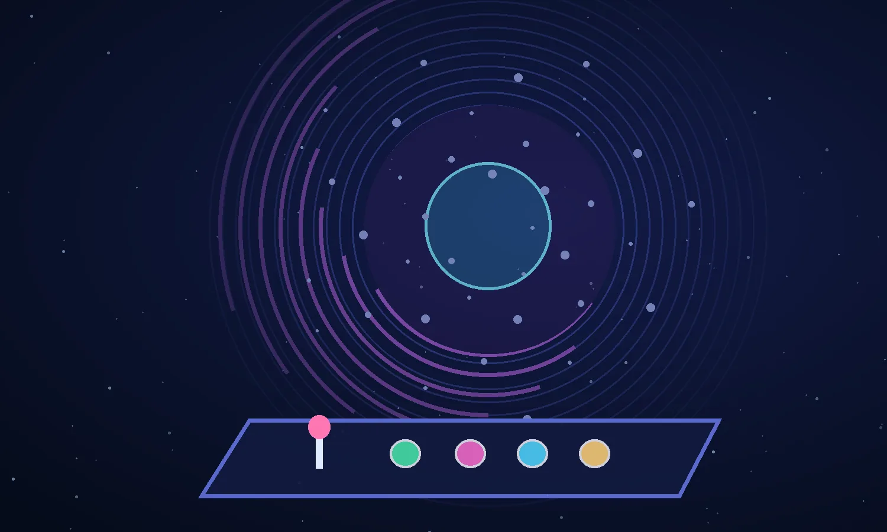
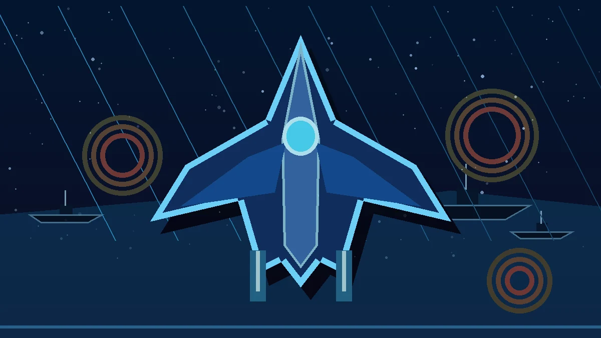
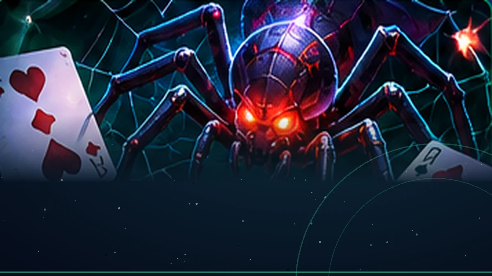
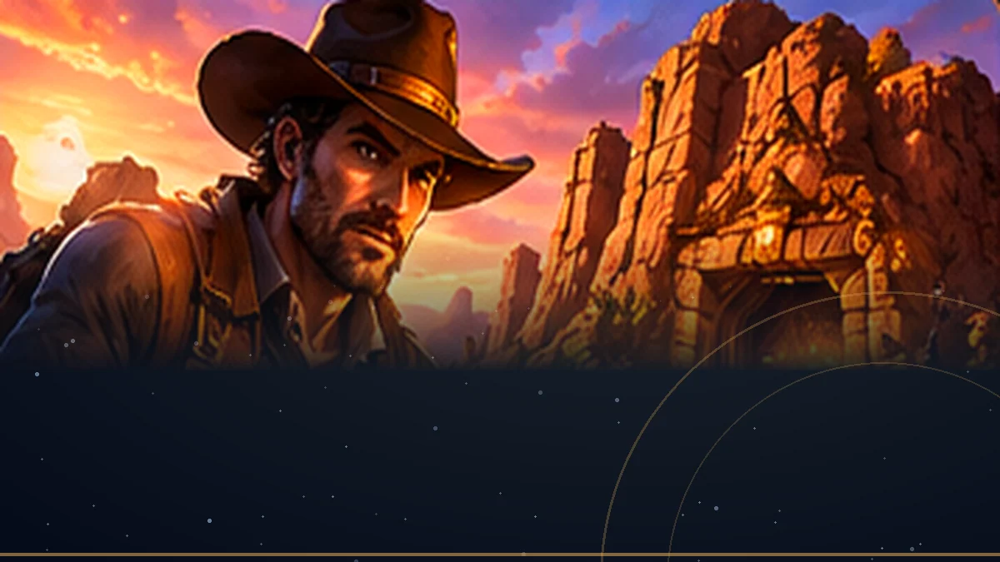
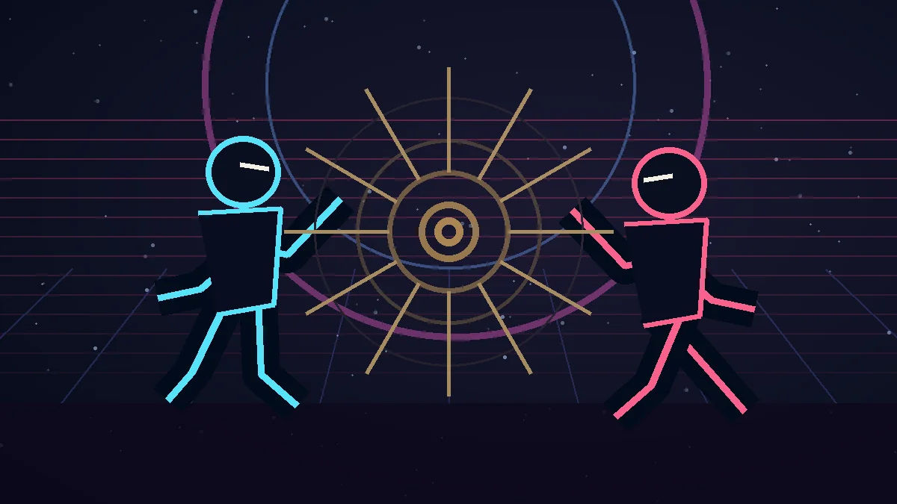
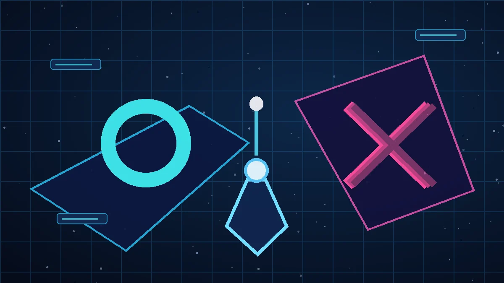

A WORLD OF PLAY · 2026
9개의 세계.
플레이는 한곳에서.
마녀의 마법과 힐링 산책부터 시간여행 슈팅, 카드 전략과 서부 탐험까지. 오늘 즐길 세계를 골라보세요.
09GAME WORLDS
05GENRES
∞FUN TO EXPLORE

● EON LIBRARY 9 GAMES IN THE COLLECTION
✦
CHOOSE YOUR ADVENTUREYOUR NEXT GAME IS ONE CLICK AWAY
* 각 게임은 독립 사이트에서 실행되며 인터넷 연결이 필요합니다.
EXPLORE THE COLLECTION
게임 라이브러리 09
장르를 고르거나 이름으로 검색하세요. 게임 안내에서 방법을 읽고 바로 시작할 수 있습니다.
전체 9개 게임
PLAY • LEARN • EXPLORE
TIME-SLIP SHOOTER
CARD & BOSS
WESTERN EXPLORATION
FIGHTING ARENA
PATENT OX CHALLENGE조건에 맞는 게임이 없습니다.
검색어 또는 장르를 바꾸면 다른 세계를 찾을 수 있습니다.
YOUR PORTAL, YOUR RULES
게임은 가볍게. 탐험은 자유롭게.
모든 게임은 각자의 사이트에서 독립 실행됩니다. 포털은 소개와 길찾기를 담당합니다.
게임 찾아보기
9개 게임을 장르별로 분류하고, 검색이나 즐겨찾기로 빠르게 찾을 수 있습니다.
방법 먼저 확인
각 게임의 안내 페이지에서 스토리, 목표, PC·모바일 조작 방법을 확인하세요.
새 탭에서 플레이
플레이 버튼을 누르면 원래 게임 사이트가 새 탭에서 열립니다. 원본 게임에는 영향이 없습니다.
✦ 새로운 게임을 추가할 때도 카드와 안내 페이지를 쉽게 확장할 수 있도록 구성했습니다.프로젝트 소스 둘러보기 ↗